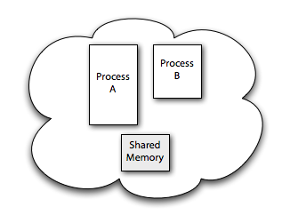

Based on appearance, a UNIX® application has sole command of the underlying host. It has ready and free access to the processor, its memory is sacrosanct, and attached devices serve the application's every whim. But true to the maxim "Appearances can be deceiving," such sovereignty is a clever illusion. A UNIX system runs any number of applications simultaneously, sharing its finite physical resources judiciously among all. Processor capacity is doled out in slices, application images are constantly shuffled in and out of real memory, and device access is driven by demand and policed by access rights. Although your shell prompt blinks attentively, a UNIX machine teems with activity.
Complexity notwithstanding, most applications are happily oblivious to shared tenancy. However, you can write applications to interact with each other. For example, one application could collect or generate data, while another monitors progress and analyzes the information on the fly. Chat, an instant exchange of messages, is another instance of cooperating code, where the application both transmits and receives data from a peer. Secure Shell (ssh) is another tandem, potentially coordinating between two entirely different hosts. In each instance, code connects to other, independent code to swap information, often using a protocol to negotiate and control the interchange.
UNIX provides a number of technologies for such interprocess communication. Some techniques provide for communication on the same host, while others facilitate host-to-host exchanges. Speed varies among the techniques, too, so you must choose the option that best suits your requirements. Coordination—enforcing timing and exclusivity—is invariably required, too. For example, if one application produces data and another consumes it, the consumer must pause and wait for the producer whenever it exhausts the shared pool. Reflexively, the producer may slow or stall if the consumer cannot deplete the pool quickly enough.
Table 1 summarizes the forms of interprocess communication available on a typical UNIX system.
Table 1. Interprocess communication in UNIX
| Name | Description | Scope | Use |
|---|---|---|---|
| File | Data is written to and read from a typical UNIX file. Any number of processes can interoperate. | Local | Sharing large data sets |
| Pipe | Data is read from and written to ??? using dedicated file descriptors. Communication occurs only between a parent and child process. | Local | Simple data sharing, such as producer and consumer |
| Named pipe | Data is read from and written to using dedicated file descriptors. Communication can occur between any two peer processes on the same host. | Local | Producer and consumer, or command-and-control, as demonstrated with the MySQL server and its command-line query utility |
| Signal | An interrupt alerts the application to a specific condition. | Local | Cannot transfer data in a signal, so mostly useful for process management |
| Shared memory | Information is shared by reading and writing from a common segment of memory. | Local | Cooperative work of any kind, especially if security is required |
| Socket | After special setup, data is transferred using common input/output operations. | Local or remote | Network services such as FTP, ssh, and the Apache Web Server |
As mentioned above, each technique suits a particular need. Assuming that coordination between multiple processes is roughly equally intricate, each approach has advantages and disadvantages:
- Sharing data via a common UNIX file is simple, because it uses familiar file operations. However, sharing data via the file system is inherently slow, because disk input and output operations cannot match the expediency of memory. Further, it is difficult to coordinate reads and writes via a file only, and ultimately, saving sensitive data in a file is not secure, because root and other privileged users can access the information. In a sense, files are best used when viewed as read-only or write-only.
- The pipe and named pipe are also simple mechanisms to use, using two standard file descriptors on each end of the connection—one exclusive to read and another exclusive to write operations. A pipe, though, can only be used between a parent and child process, not between two arbitrary processes. The named pipe addresses the latter shortcoming and is an excellent choice for data exchange on the same system. However, neither a pipe nor a named pipe provides random access, because each operates as a first-in, first-out (FIFO) device.
- A signal cannot transfer data from one process to another. In general, signals should only be used to communicate exceptional conditions between one process and another.
- Shared memory is well suited to larger collections of data and, because it uses memory, grants fast, random access. Shared memory is slightly more complicated to implement but is otherwise an excellent choice for intrahost collaboration between multiple processes.
- A socket functions much like a named pipe but can span hosts. Local sockets (also called UNIX sockets) are restricted to local (same host) connectivity. Inet and Inet6 sockets, which use the IPv4 and IPv6 protocols, respectively, accept remote connections (and local connections via the local machine's Internet addressing). The socket is the obvious choice for any networking application, such as distributed processing or a Web browser. Coding is a little more complicated than with named pipes, but the pattern is well established and well documented in any UNIX network programming book.
Ignoring interhost applications, let's look at shared memory for interprocess communication on the same host.
As its name implies, shared memory makes a segment of memory accessible to more than one process. Special system calls, or requests to the UNIX kernel, allocate and free the memory and set permissions; common Read and Write operations put and get data from the region.
Shared memory is not drawn from a process's own memory: That memory is always private. Instead, shared memory is allocated from the system's free memory pool and is annexed by each process that wants access. Annexation is called mapping, where the shared segment of memory is assigned local addresses in each process' own address space. Figure 1, Figure 2, Figure 3, and Figure 4 depict the process:
- Assume two processes, A and B, are running on the same system, as
shown in Figure 1, and have been specifically
coded to coordinate and share information via shared memory. A
and B have disproportionate sizes in the figure to emphasize that
the applications need not be identical.
Figure 1. xxx
- In Figure 2, process A requests a segment of shared
memory. Process A initializes the memory segment, preparing it for
use. The process also names the segment so that other processes can
find it. Typically, a segment name is not dynamically assigned; instead,
it is well known, such as a constant in a header file, and easily referenced
from other code.
Figure 2. xxx

- Process A annexes, or maps, the shared memory segment into its own
address space. Process B finds the segment via its named pipe and also
maps the segment into its address space. This is shown in
Figure 3. Both processes are enlarged by the size of
the shared memory segment.
Figure 3. xxx
- Finally, in Figure 4, processes A and B can read and written
from the shared memory segment freely. The shared memory is treated
the same as local process memory.
read()andwrite()operate as normal.
Figure 4. xxx
Much of the work shown in these figures is captured in the UNIX shared memory API. In fact, there are two variants of the shared memory API: the POSIX API and the older but no less effective System V API. Because POSIX is the ratified standard and likely found on UNIX and Linux® and derivations of those systems, let's use that version. Additionally, the POSIX API uses simple file descriptors for read and write and so should seem much more familiar.
POSIX provides five entry points to create, map, synchronize, and undo shared memory segments:
shm_open(). Creates a shared memory region or attaches to an existing, named region. This system call returns a file descriptor.shm_unlink(). Deletes a shared memory region given a file descriptor (returned fromshm_open(). The region is not actually removed until all processes accessing the region exit, much like any file in UNIX. However, onceshm_unlink()is called (typically by the originating process), no other processes can access the region.mmap(). Maps a shared memory region into the process's memory. This system call requires the file descriptor fromshm_open()and returns a pointer to memory. (In some cases, you can also map a file descriptor to a plain file or another device into memory. A discussion of those options is beyond the scope of this introduction; consult themmap()documentation for your operating system for specifics.)munmap(). The inverse ofmmap().msync(). Used to synchronize a shared memory segment with the file system—a technique useful when mapping a file into memory.
The pattern for shared memory is to create a segment with shm_open(),
size it with write() or ftruncate(),
map it into process memory with mmap(), and do the
work required with one or more additional participants. To finish, the originating
process calls munmap() and shm_unlink(),
and then exits.
Listing 1 shows a small shared memory example. (The code is derived from John Fusco's book, The Linux Programmer's Toolbox, and used with the permission of the author.) The code implements a parent and child process that communicates via a shared memory segment.
Listing 1. Shared memory example
#include <stdio.h>
#include <string.h>
#include <stdlib.h>
#include <unistd.h>
#include <sys/file.h>
#include <sys/mman.h>
#include <sys/wait.h>
void error_and_die(const char *msg) {
perror(msg);
exit(EXIT_FAILURE);
}
int main(int argc, char *argv[]) {
int r;
const char *memname = "sample";
const size_t region_size = sysconf(_SC_PAGE_SIZE);
int fd = shm_open(memname, O_CREAT | O_TRUNC | O_RDWR, 0666);
if (fd == -1)
error_and_die("shm_open");
r = ftruncate(fd, region_size);
if (r != 0)
error_and_die("ftruncate");
void *ptr = mmap(0, region_size, PROT_READ | PROT_WRITE, MAP_SHARED, fd, 0);
if (ptr == MAP_FAILED)
error_and_die("mmap");
close(fd);
pid_t pid = fork();
if (pid == 0) {
u_long *d = (u_long *) ptr;
*d = 0xdbeebee;
exit(0);
}
else {
int status;
waitpid(pid, &status, 0);
printf("child wrote %#lx\n", *(u_long *) ptr);
}
r = munmap(ptr, region_size);
if (r != 0)
error_and_die("munmap");
r = shm_unlink(memname);
if (r != 0)
error_and_die("shm_unlink");
return 0;
}
|
Here are some highlights from the code:
- The call to
shm_open()should look familiar: It is much like theopen()function, including how to initialize the segment and permissions. Here, the segment is world-readable and world-writable. The next unused file descriptor is returned if the call is successful; otherwise,-1is returned anderrnois set accordingly. ftruncate()sizes the file toregion_sizebytes, which was previously set to the system's standard page size.sysconf()is provided as part of libc. (You can use the shell utilitygetconfto explore your system's configuration settings, too.)mmap()annexes the shared memory segment and returns a pointer suitable for reading and writing bytes directly from the segment.PROT_READandPROT_WRITEindicate that the pages in the segment can be read from and written to, respectively.MAP_SHAREDspecifies that any changes to the memory segment should be "public" to all cooperating processes.- The computation part of the code should seem familiar if you've worked at
all with
fork(): After the fork, the parent and child have copies of all open file descriptors and data values, so the pointer works for both.pid, however, differs. The child gets 0, the parent gets the process ID of the child, and the value of the variable determines which of theif/then/elsebranches to take. The child writes some bytes to the pointer, and then exits. The parent waits for the child to exit, and then reads what was written. - Before the parent can exit, however, it must free the shared memory.
munmap()andshm_unlink()do the trick.
This example is very elementary. A real application would use semaphores or other techniques to control reading and writing to the shared segment. Such control is typically application specific, and you can find many examples in the Berkeley Software Distribution (BSD) and Linux source, if your UNIX flavor is not open source.
Because UNIX runs many applications seemingly at the same time, it's an ideal platform for monitoring, data collection, cooperative and distributed computing, and client-server applications. Shared memory is the fastest of the interprocess communications options available and is quite flexible. You can map files into memory, as well—an ideal solution for accelerating data access.
Learn
-
Speaking
UNIX: Check out other parts in this series.
-
AIX and UNIX developerWorks
zone: The AIX and UNIX zone provides a wealth of information relating to
all aspects of AIX systems administration and expanding your UNIX skills.
-
New to AIX and UNIX?
Visit the New to AIX and UNIX page to learn more.
-
Technology
bookstore: Browse the technology bookstore for books on this and other
technical topics.
Discuss
-
developerWorks blogs: Check out
our blogs and get involved in the developerWorks
community.
-
Participate in the AIX and UNIX forums:
- AIX 5L—technical forum
- AIX for Developers Forum
- Cluster Systems Management
- IBM Support Assistant
- Performance Tools—technical
- More AIX and UNIX forums

Martin Streicher is a freelance Ruby on Rails developer and the former Editor-in-Chief of Linux Magazine. Martin holds a Masters of Science degree in computer science from Purdue University and has programmed UNIX-like systems since 1986. He collects art and toys. You can reach Martin at martin.streicher@gmail.com.